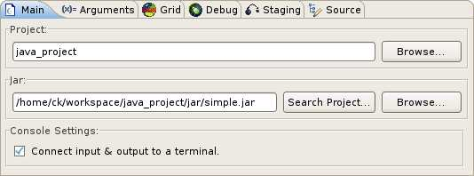
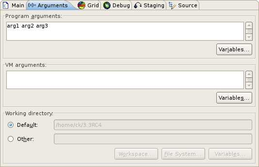
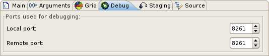
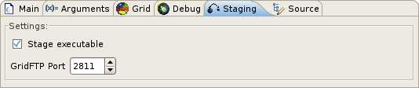
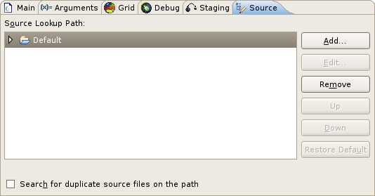

Always consider that the application will run on a remote machine and therefore the following requirements have to be met.
Allows to select the project and a jar containing the project which will be used to run the application. Moreover the program's in- and output can be connected to a console.
Provides fields to specify program arguments, virtual machine arguments and the program's working directory.
The application will be started on a remote machine defined by a contact string. Optionally, it is possible to specify the remote GLogin executable instead of using the default one. Furthermore, the encryption of the communication to the remote host can be deactivated.

The remote debugging uses a port forwarded through GLogin which can be defined using the fields of this tab.
Currently GridFTP is used to transfer the jar file, selected in the Main Dialog, to the computing element from the contact string specified in the Grid Tab. In addition to enabling or disabling of the executable staging it is possible to set the port used for GridFTP.
The source search path for the debugger can be specified in this tab.
